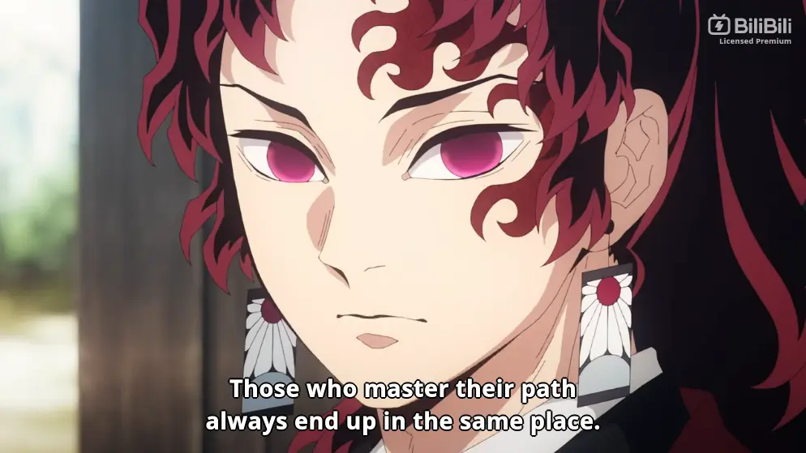

<!DOCTYPE html>
<html lang="en">
  <head>
    <meta charset="UTF-8" />
    <meta name="viewport" content="width=device-width, initial-scale=1.0" />
    <meta name="description" content="Explore by reading..." />
    <meta name="application-name" content="lash (personal)" />
    <meta name="keywords" content="blog article, ph blog, eyelash, lash" />
    <meta name="referrer" content="origin-when-cross-origin" />
    <meta name="creator" content="unknown" />
    <link rel="canonical" href="https://lashmono.space" />
    <link
      rel="alternate"
      hreflang="en-US"
      href="https://lashmono.space/en-US"
    />
    <meta
      name="format-detection"
      content="telephone=no, address=no, email=no"
    />
    <meta property="og:title" content="Yoriichi's golden rule" />
    <meta property="og:description" content="Explore by reading..." />
    <meta property="og:url" content="https://lashmono.space" />
    <meta property="og:site_name" content="lash - stories" />
    <meta
      property="og:image"
      content="https://lashmono.space/async/prod/akame-seo-pt2.webp"
    />
    <meta property="og:image:width" content="1200" />
    <meta property="og:image:height" content="630" />
    <meta name="twitter:card" content="summary_large_image" />
    <meta name="twitter:title" content="Yoriichi's golden rule" />
    <meta name="twitter:description" content="Explore by reading..." />
    <meta
      name="twitter:image"
      content="https://lashmono.space/async/prod/akame-seo-pt2.webp"
    />
    <link rel="preconnect" href="https://fonts.googleapis.com" />
    <link rel="preconnect" href="https://fonts.gstatic.com" crossorigin />
    <link
      href="https://fonts.googleapis.com/css2?family=Outfit:wght@400;800&display=swap"
      rel="stylesheet"
    />
    <link
      rel="stylesheet"
      href="https://cdnjs.cloudflare.com/ajax/libs/font-awesome/6.4.2/css/all.min.css"
      integrity="sha512-z3gLpd7yknf1YoNbCzqRKc4qyor8gaKU1qmn+CShxbuBusANI9QpRohGBreCFkKxLhei6S9CQXFEbbKuqLg0DA=="
      crossorigin="anonymous"
      referrerpolicy="no-referrer"
    />
    <link
      href="https://unpkg.com/boxicons@2.1.4/css/boxicons.min.css"
      rel="stylesheet"
    />
    <link rel="stylesheet" type="text/css" href="../../src/mono/art.css" />
    <script src="../../_poly.js" type="module"></script>
    <title>Yoriichi's golden rule</title>
  </head>
  <body>
    <div class="scrollbtn" id="scrollTop">
      <i class="fas fa-arrow-up"></i>
    </div>
    <header class="lash-nav-contain">
      <div class="lash-parent">
        <div class="lash-logo"></div>
        <div class="lash-toggle" id="colorToggle">
          <i class="fa-regular fa-sun"></i>
        </div>
      </div>
    </header>
    <aside class="article-banner">
      
    </aside>
    <main class="article-container">
      <aside class="article-parent">
        <article class="lash-article-body">
          <!-- sponsored by niggachad -->
          <noscript>
            <div class="lash-noscript">
              
              <header>
                Wait bitch I ask you so what makes you think that you can find
                some non-javascript websites?
              </header>
              <figcaption>
                Stop being delusional you're just feeding your ass in disbeliefs
                that will never be.
              </figcaption>
            </div>
          </noscript>
          <figure class="lash-min-read">3 min read</figure>
          <header class="lash-article-header">Yoriichi's Golden Rule</header>
          <picture>
            
            <span class="media-info"
              >Demon Slayer: Kimetsu no Yaiba Swordsmith Village Arc (EP1)</span
            >
          </picture>
          <figcaption>
            In case, that you didn't know about the fictional guy he's Yoriichi
            Tsukiguni (one of the protagonist in the mentioned anime story) now
            his famous line has rightfully give me some chills to understand
            what those basically means, how does it feel to me and how does
            reflects basically to where you at right now.
          </figcaption>
          <figcaption>
            Imagine, you were born and belong to high class with almost of
            things you can easily afford but you feel there's more lack of
            anything that you really need in most of time so this is actually a
            common but let me bring you there.
          </figcaption>
          <figcaption>
            I remember when I try my best to learn everyday with programming so
            that I can do basically what the professionals can do so after many
            years of doing the same thing seriously I still don't know the
            programming Idk what can I react but seriously it becomes more skill
            issue also like what did I miss? so probably hard to tell.
          </figcaption>
          <figcaption>
            Now, I do something a quick recap on the things that I did starting
            from my early days of learning this programming let's check it out.
          </figcaption>
          <picture>
            
            <span class="media-info">This is my 5 years in just a minute.</span>
          </picture>
          <figcaption>
            2019, I started to do some part-time job as a UI designer only for
            an individual (who's now the most trusted senior developer in their
            company) I only use Adobe XD because I'm stupid to learn Figma so I
            used to be an Adobe enjoyer before without knowing that it was a
            crap to pay for software he teach me many things including the
            differnce of not using pirated software just for security.
          </figcaption>
          <figcaption>
            2020, I started to learn HTML and CSS since I have my background in
            UI / UX so I used some techniques to make it real until I manage to
            do something more & more.
          </figcaption>
          <figcaption>
            2021, I spend more days to do some web-design than socializing this
            was time that I had no idea what the fuck was going like I have no
            online classes for the whole school year this is actually a
            unfateful but I manage to use it all over to spend for the rest of
            my Grade 11.
          </figcaption>
          <figcaption>
            2022, in the middle of my existential crisis we have a work
            immersion final project this is to make our own webpages so this is
            reason why I made this up to the point.
          </figcaption>
          <picture>
            
            <span class="media-info"
              >My first version of portfolio (I don't really like it)</span
            >
          </picture>
          <figcaption>
            If you feel some this is stupid website then I apologize because I
            rarely do this just for school activity 😂
          </figcaption>
          <figcaption>
            Now, after all of the things that I've done I will ended up here to
            become more stupid but in reality I learn so many things not just
            from my three personnels who help me to continue these journey so
            special mention (Kuya JP, xuronno and my brother named Roguu) so
            arigato and have a live longer.
          </figcaption>
          <figcaption>
            Back to topic, the impact of yoriichi's quote is to make us realize
            whatever possible you achieve right now either you become rich
            personnel, become a powerful man, become a serial-killer or most
            wanted maybe and so on. All of us will ended up in the same place
            where we begin to start sometimes it can be a hard to tell but it is
            strongly to be what it is.
          </figcaption>
          <figcaption>
            Sometimes we may have committed our own sins during our time but the
            truth can't prevail for the things we've done also we may already
            notice throughout the time that we live in a unknown world we can't
            just understand everything in a single minute until our own
            curiousity turns out.
          </figcaption>
          <figcaption>
            I love how the fictional stories tell us more things that we really
            couldn't just understand in every single moment while we live in
            this unexplainable planet I believe no one is actually wanted to
            stay here except for those who really wish to be here very longer.
          </figcaption>
          <figcaption>
            The reason was not met for simple reasonings like they haven't yet
            fuifilled their jobs until they leave the Earth I think there's more
            complicated than about it so it's really hard to tell about the
            reason why some humans could live longer (no scientific bias ok).
          </figcaption>
        </article>
      </aside>
      <footer class="after-reading">
        <figure>Enjoyed reading?</figure>
        <figcaption>
          Is it that so? you might not need to follow me on twitter stranger!
          just explore more articles here if you wanted to learn more things
          that I only know lol.
        </figcaption>
      </footer>
    </main>
    <script src="../separate.js"></script>
  </body>
</html>
